Test a pitch rate control augmentation system.
------------------------------------------------------------------------
See also AircraftControlCAS, QECI, VTToVB, AC, ACBuild, ACInit, ACPlot,
DrawAC, HUD, HUDCntrl, ACEngEq, ACModes, ACSensor, @acstate/acstate.m,
Altitude, TimeGUI
------------------------------------------------------------------------
Contents
Global for the time GUI
global simulationAction
simulationAction = ' ';
Global for the HUD
global hUDOutput
hUDOutput = struct('pushbutton1',0,'pushbutton2',0,'checkbox1',0,...
'checkbox2',0,'checkbox3',0);
Select actuator
actuatorName = 'elevator';
F16 database
d = ACBuild('F16');
d.theta0 = 0;
d.wPlanet = [0;0;0];
d.actuator.name = 'F16Actuator';
d.aero.name = 'ACAero';
d.engine.name = 'ACEngine';
d.rotor.name = [];
d.sensor.name = 'ACSensor';
d.disturb.name = [];
Load the standard atmosphere
d.atmData = load('AtmData.txt');
d.atmUnits = 'eng';
Actuator dynamics
d.actuator.throttleLag = 4.9505e-02;
d.actuator.elevatorLag = 4.9505e-02;
d.actuator.aileronLag = 4.9505e-02;
d.actuator.rudderLag = 4.9505e-02;
Control settings
d.control.throttle = 0.1385;
d.control.elevator = -0.7588;
d.control.aileron = -1.2e-7;
d.control.rudder = 6.2e-7;
Initial state vector Corresponding to Nominal in Table 3.4-3 p. 139 of the reference
altitude = 100;
alpha = 0.03691;
beta = -4.0e-9;
theta = 0.03991;
vT = 502;
v = VTToVB( vT, alpha, beta );
cG = [0.35;0;0];
r = [2.092565616797901e+07+altitude;0;0];
eulInit = [0;theta;0.00];
q = QECI( r, eulInit );
w = [0;0;0];
wR = 160;
engine = ACEngEq( d, v, r );
mass = 1/1.57e-3;
inertia = [9497;55814;63100;0;-982;0];
actuator = [0;0;0;0];
sensor = [];
flex = [];
disturb = [];
Initial time and state
t = 0;
x = acstate( r, q, w, v, wR, mass, inertia, cG, engine, actuator, ...
sensor, flex, disturb );
Initialize the model
dT = 0.1;
nSim = 200;
d = ACInit( x, d );
gLin = AC( x, 0, 0, d, 'linalpha');
aC = get( gLin, 'a' );
Display aircraft rigid body modes
ACModes( gLin );
--------------------------------------------------------------------------------------------------------------
Rigid Body Aircraft Modes
Phugoid Short Period Dutch Roll Roll Spiral
s 0.0922 ± 0.0000 -0.1107 ± 0.0000 -0.4296 ± 3.1521 -3.6042 -0.0132
zeta 0.000 0.000 0.135 0.000 0.000
tau -10.85 9.03 1.99 0.28 75.60
--------------------------------------------------------------------------------------------------------------
phi -6.66e-06 ± 0.00e+00 7.01e-06 ± 0.00e+00 -3.79e-02 ± -3.08e-01 -2.78e-01 1.00e+00
theta -3.58e-03 ± 0.00e+00 2.71e-03 ± 0.00e+00 -1.03e-04 ± 8.31e-05 -3.74e-06 5.77e-05
omega x -5.95e-07 ± 0.00e+00 -7.92e-07 ± 0.00e+00 1.00e+00 ± 0.00e+00 1.00e+00 -1.57e-02
omega y -3.30e-04 ± 0.00e+00 -3.00e-04 ± 0.00e+00 -2.18e-04 ± -3.59e-04 1.35e-05 -7.64e-07
omega z -4.77e-07 ± 0.00e+00 4.02e-07 ± 0.00e+00 -2.84e-01 ± 3.27e-01 1.30e-02 6.29e-02
vT 1.00e+00 ± 0.00e+00 1.00e+00 ± 0.00e+00 -7.60e-04 ± -6.90e-04 -1.99e-05 -2.41e-01
alpha -5.03e-04 ± 0.00e+00 -5.88e-04 ± 0.00e+00 -1.11e-04 ± 4.16e-05 -4.71e-06 6.17e-05
beta 6.05e-08 ± 0.00e+00 9.82e-08 ± 0.00e+00 -1.12e-01 ± -9.65e-02 -1.76e-03 3.21e-03
--------------------------------------------------------------------------------------------------------------
Set up the HUD
dHUD.atmData = d.atmData;
dHUD.atmUnits = 'eng';
cHUD.control = d.control;
cHUD.elevatorMax = 90;
cHUD.aileronMax = 90;
cHUD.rudderMax = 90;
cHUD.dT = dT;
hHUD = HUD( 'init', dHUD, x, [], cHUD );
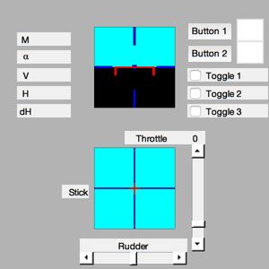
Set up the aircraft display
gF16 = load('gF16');
hF16 = DrawAC( 'init', gF16, x, [], d.atmUnits );
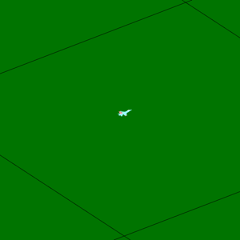
Set up the control inputs
AircraftControlCAS( 'initialize', struct( 'dT', dT, 'control', d.control ) )
Initialize the plots
plots = [ 'Euler angles ';...
'Quaternion ';...
'Quaternion NED To B';...
'Angular rate ';...
'Position ECI ';...
'Velocity ';...
'Actuator states ';...
'Alpha ';...
'Rudder ';...
'Throttle ';...
'Aileron ';...
'Elevator '];
dPlot = ACPlot( x, 'init', plots, d, nSim, dT, nSim );
Initialize the time display
tToGoMem.lastJD = 0;
tToGoMem.lastStepsDone = 0;
tToGoMem.kAve = 0;
ratioRealTime = 0;
[ ratioRealTime, tToGoMem ] = TimeGUI( nSim, 0, tToGoMem, 0, dT, 'F16 Simulation' );
for k = 1:nSim
[ ratioRealTime, tToGoMem ] = TimeGUI( nSim, k, tToGoMem, ratioRealTime, dT );
hHUD = HUD( 'run', dHUD, x, hHUD, cHUD );
pilotPitchRateInput = struct( 'enter', hUDOutput.pushbutton1, 'value',...
hHUD.control.text1 );
d.control = AircraftControlCAS( 'update', struct( 't', t, 'sensor', ...
ACSensor( x, d, 'meas' ), 'pilotPitchRateInput', pilotPitchRateInput ) );
dPlot = ACPlot( x, 'store', dPlot, d.control );
hF16 = DrawAC( 'run', gF16, x, hF16, d.atmUnits );
x = AC( x, t, dT, d );
t = t + dT;
switch simulationAction
case 'pause'
pause
simulationAction = ' ';
case 'stop'
return;
case 'plot'
break;
end
HUDCntrl;
end
TimeGUI('close');
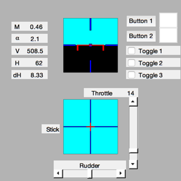 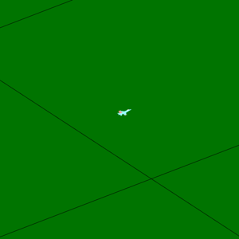
Create the plots
ACPlot( x, 'plot', dPlot );
Figui;
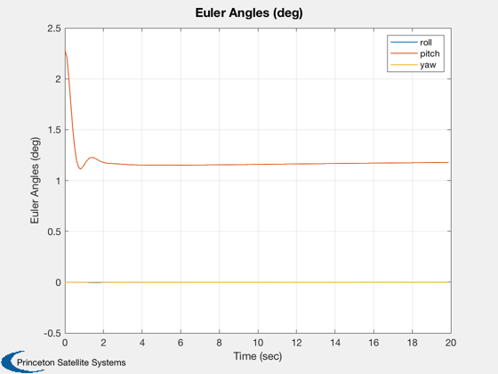 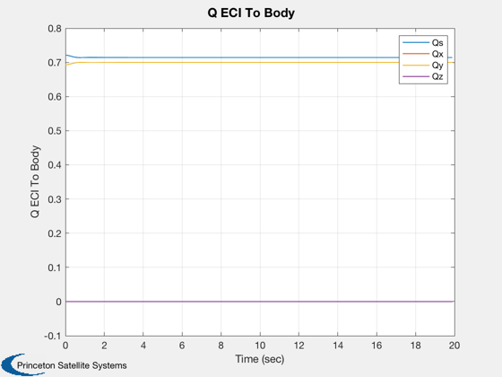 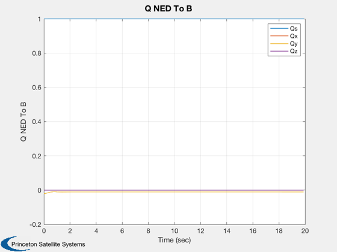 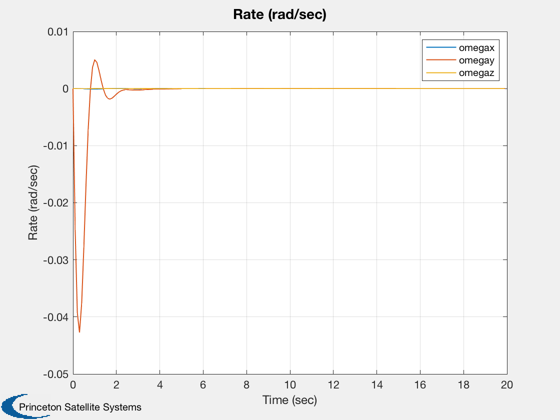 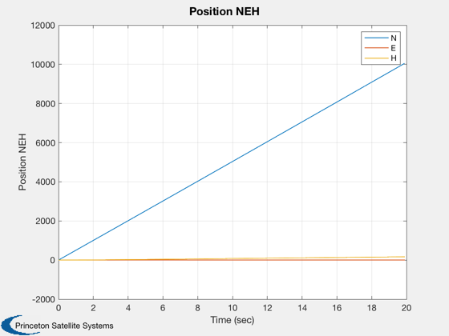 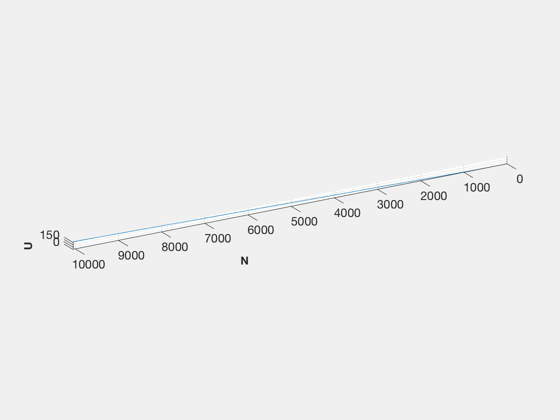 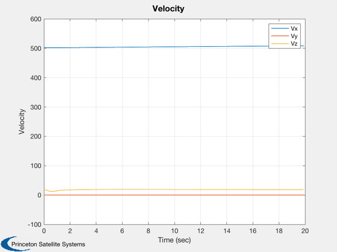 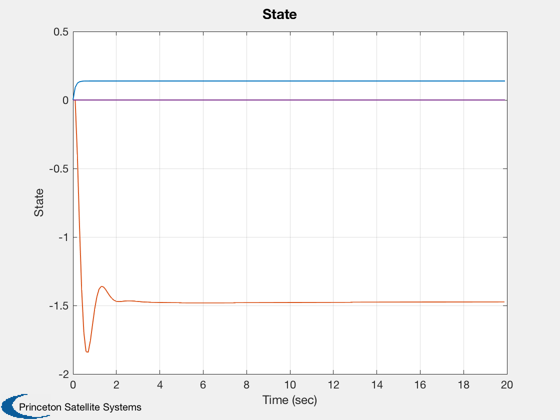 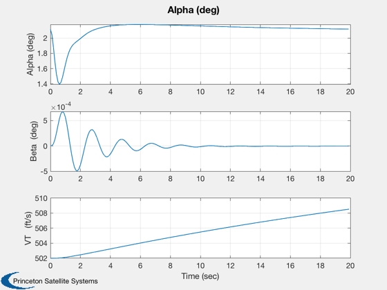 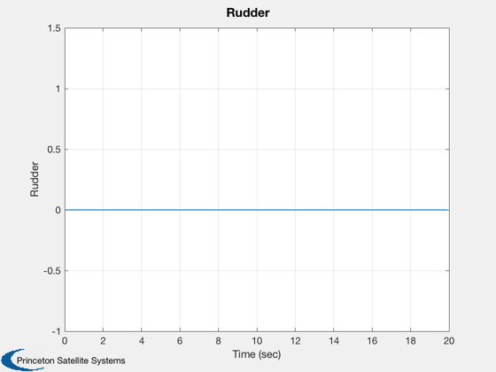 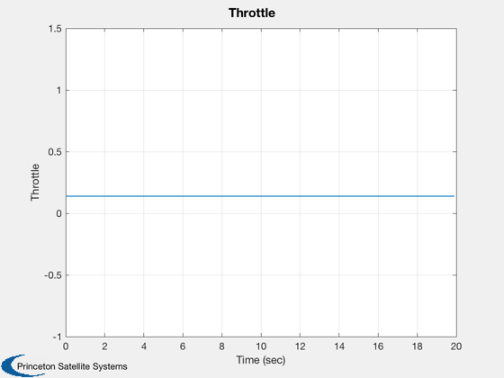 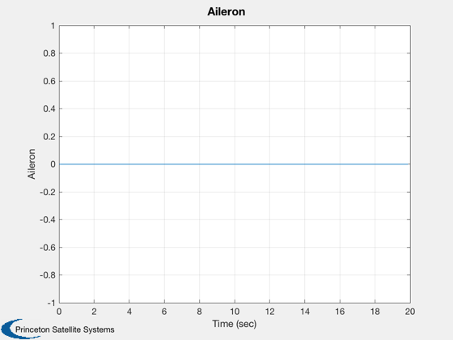 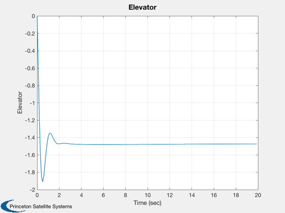 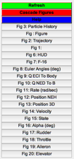